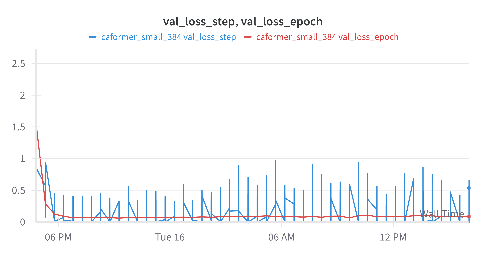
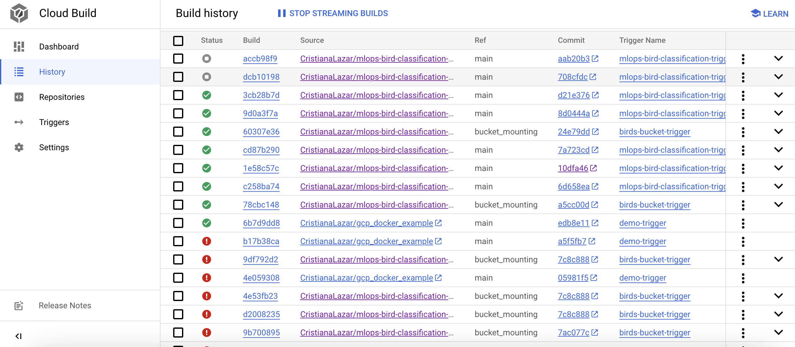

The checklist is exhaustic which means that it includes everything that you could possible do on the project in relation the curricilum in this course. Therefore, we do not expect at all that you have checked of all boxes at the end of the project.
make_dataset.py (save_data_mean_std.py) file such that it downloads whatever data you needrequirements.txt file with whatever dependencies that you are usingpep8) while doing the projectEnter the group number you signed up on learn.inside.dtu.dk
Answer:
This project has been executed by group: MLOps 4.
Enter the study number for each member in the group
Answer:
This project has been executed by students: s184202, s193973, s222681 and s222698
What framework did you choose to work with and did it help you complete the project?
Answer:
We chose to work with the TIMM (PyTorch Image Models), PyTorch Lightning and TorchMetrics frameworks; where TIMM's pre-trained models, PyTorch Lightning's training framework and TorchMetrics' performance metrics formed a robust environment for developing a bird species classifier.
The TIMM framework was central to our model development with its wide range of pre-trained computer vision models which allowed leveraging transfer learning in fine-tuning a classification model. The function create_model was used to initialise model architectures with pre-trained weights and tailor them to our dataset.
A training pipeline was set up with PyTorch Lightning’s LightningModule and Trainer; organising training and validation steps, model checkpoints and logging with WANDB. This enabled us to focus on the model's logic rather than the boilerplate code. TorchMetrics was similarly used to handle performance metrics, providing a convenient and reliable way to calculate accuracy to be logged during both training and validation phases.
In the following section we are interested in learning more about you local development environment.
Explain how you managed dependencies in your project? Explain the process a new team member would have to go through to get an exact copy of your environment.
Answer:
In this project a .toml file was used for managing dependencies, compatible with different environment managers like pipenv, conda, and venv. This approach allowed flexibility in tool choice while ensuring a consistent development setup.
For a new team member to set up their environment, the steps are as follows:
Clone the Repository: Start by cloning the project repository.
Choose an Environment Manager:
python -m venv env and activate it with source env/bin/activate (Unix/macOS) or env\Scripts\activate (Windows).pipenv shell to create and activate the environment.For conda: Create a new environment with conda create --name myenv and activate it using conda activate myenv.
Install the Project: Run pip install -e . in the project directory. This command installs the project in editable mode and also automatically installs build dependencies as specified in the .toml file and the dependencies listed in requirements.txt.
Install Additional Development Dependencies (if applicable): For any optional development dependencies, install them from requirements_dev.txt using pip install -r requirements_dev.txt.
This process ensures that the team member's development environment mirrors the project's setup, maintaining consistency across different setups.
We expect that you initialized your project using the cookiecutter template. Explain the overall structure of your code. Did you fill out every folder or only a subset?
Answer:
The project's code structure, initially set up using the provided cookiecutter template, underwent minor modifications to better suit the specific needs:
src): Renamed the standard source folder to src for enhanced clarity.src, added a config folder for Hydra configurations and a utils folder for essential utility scripts, like index to class mappings.Apart from these additions, all other folders from the cookiecutter template were utilized, with the exception of the notebooks folder, which was not needed for this project. These minor changes ensure that the project structure remains organized and efficient, while being tailored to the project.
Did you implement any rules for code quality and format? Additionally, explain with your own words why these concepts matters in larger projects.
Answer:
Sticking to PEP 8 guidelines was the key strategy for code quality and format. In large-scale projects, this approach is important. It ensures the code is clear and uniform, which simplifies reading and teamwork. Following these standards also helps in keeping up the quality of the code, minimizes errors, and makes debugging easier. Essentially, it’s about easing the team collaboration by maintaining a strong codebase in more complex projects.
In the following section we are interested in how version control was used in your project during development to corporate and increase the quality of your code.
How many tests did you implement and what are they testing in your code?
Answer:
In total, we have implemented four tests. These tests have been made to guarantee the reliability and robustness of our data
handling and model generation components. For the data handling a single test was created, test_data_loading, that assures that
the data is properly loaded.
For the model generation, we implemented three tests: test_forward_pass - which tests the forward pass of the model,
test_training_step - which tests the training pass of the model, and test_validation_step - which tests the validation pass of
the model.
What is the total code coverage (in percentage) of your code? If you code had an code coverage of 100% (or close to), would you still trust it to be error free? Explain you reasoning.
Answer:
The total code coverage of the code is 90%, as can be seen from the output of coverage report:
```
Name Stmts Miss Cover
src/init.py 0 0 100% src/data/init.py 0 0 100% src/data/data.py 32 4 88% src/models/init.py 0 0 100% src/models/model.py 50 14 72% tests/init.py 4 0 100% tests/test_data.py 55 0 100% tests/test_model.py 40 0 100%
TOTAL 181 18 90%
``` Even if the coverage is 10% far from the perfect one, this does not guarantee the lack of bugs and errors in the code. Despite our extensive testing of the data loader and model training modules, unforeseen interactions and edge cases may still exist. Nevertheless, a high code coverage is a good indicator that the code has been tested.
Did you workflow include using branches and pull requests? If yes, explain how. If not, explain how branches and pull request can help improve version control.
Answer:
We made use of both branches and PRs in our project. For every task, we created a branch and also protected the main branch by adding the following rules: at least one person needs to approve any PR, all your workflows have to pass and all conversations need to be resolved. By using branches and pull requests in version control it ensures that changes are reviewed before merging, maintaining code integrity, and facilitating smoother project evolution.
Did you use DVC for managing data in your project? If yes, then how did it improve your project to have version control of your data. If no, explain a case where it would be beneficial to have version control of your data.
Answer:
Using Data Version Control (DVC) in the project provided an easy and seamless method to pull data onto VM instances for training, both on DTU's High-Performance Computing (HPC) Cluster and Google Cloud Platform (GCP). This setup allowed for straightforward synchronization of the latest datasets and models from the DVC remote (initially on Google Drive, then on a GCP bucket) directly to the VMs. Whether training was conducted on the HPC Cluster or GCP, DVC ensured that the most current version of the data was always used, streamlining the workflow and enhancing the efficiency and consistency of the training process across different platforms.
Discuss you continues integration setup. What kind of CI are you running (unittesting, linting, etc.)? Do you test multiple operating systems, python version etc. Do you make use of caching? Feel free to insert a link to one of your github actions workflow.
Answer:
We set up our Continuous Integration (CI) using two separate files: one for checking code standards, named .github/workflows/codecheck.yml, and another for running unit tests, called .github/workflows/tests.yml. To make sure our code meets standards, we use tools like Ruff and MyPy for type checking. We only tested the code on one operating system, specifically ubuntu-20.04, as it was the operating system used for developing the project, and on one version of Python, namely python 3.10.0, as required by the project.
To make the processes faster, we use a caching mechanism. This way, every package we download won't be deleted after the workflow finishes, improving the overall speed of the workflow. Additionally, we included a requirements_tests.txt file with the specific packages required for running the workflow - for example, typing packages required by mypy.
Our GitHub Actions workflows run automatically every time we merge a branch into the main branch or create a pull request. This helps us ensure our project's integrity and quality by consistently checking for issues and making sure everything works well.
An example of a triggered workflow can be seen here: https://github.com/CristianaLazar/mlops-bird-classification-project/actions/runs/7555347779/job/20570134093
In the following section we are interested in learning more about the experimental setup for running your code and especially the reproducibility of your experiments.
How did you configure experiments? Did you make use of config files? Explain with coding examples of how you would run a experiment.
Answer:
Experiments are configured using Hydra with distinct YAML files for each experiment in a config group. For instance, exp1.yaml and exp2.yaml are placed in an experiment directory. To run an experiment, you specify the configuration file as a command-line argument. For example, to run exp1, the command is python train_model.py experiment=exp1. This approach replaces the need for an argparser, as Hydra handles the parsing and merging of configurations from the command line and the YAML files.
Reproducibility of experiments are important. Related to the last question, how did you secure that no information is lost when running experiments and that your experiments are reproducible?
Answer:
To secure reproducibility and minimize information loss in experiments, Hydra and PyTorch Lightning are employed. Each experiment is configured using a dedicated YAML file, providing consistent settings. When an experiment runs, Hydra creates a unique directory, storing all outputs, logs, and configurations, ensuring a comprehensive record.
For randomness control, PyTorch Lightning's seed_everything function is used to seed all random number generators consistently. This is crucial for experiments with stochastic processes, maintaining reproducibility. To replicate an experiment, the same configuration file and seed are used, like running python train_model.py experiment=exp1. This approach, combining Hydra's configuration management with PyTorch Lightning's seeding, guarantees precise and replicable experiment documentation.
Upload 1 to 3 screenshots that show the experiments that you have done in W&B (or another experiment tracking service of your choice). This may include loss graphs, logged images, hyperparameter sweeps etc. Explain what metrics you are tracking and why they are important.
Answer:
In the project, tracking training and validation loss, along with accuracy, both on a step-wise and per epoch basis, was essential for evaluating model performance under various conditions.
Logging both training and validation metrics is critical. Training metrics assess how well the model learns from the dataset, but they don't tell the whole story. Over-reliance on training data can lead to overfitting. Validation metrics, however, provide insight into the model's ability to generalize to new data, a crucial factor for real-world applicability.
The step-wise tracking, as depicted in the image below, offers a granular view of the model's performance on different data batches. This level of detail can uncover fluctuations in model performance that might not be apparent from epoch-wise metrics alone.

The experiments conducted involved testing various image resizing parameters (224 and 384) and augmentation strategies. Analyzing how these factors impacted the key metrics was key to optimizing the models for accuracy.
Also, the project compared different model sizes: one larger for cloud-based deployment and a smaller one for on-device applications. This differentiation was essential to envistigate weather an on-device model was viable without sacrificing too much model performance. Below is an image showing the effects of these varying parameters and strategies on the model's performance.
The ongoing analysis of these metrics and adaptation of parameters aimed to refine the models, ensuring they are not only accurate but also effective and reliable for practical use.
Docker is an important tool for creating containerized applications. Explain how you used docker in your experiments? Include how you would run your docker images and include a link to one of your docker files.
Answer:
As reproducibility is crucial, for this project, we developed several images: one for training, one for inference and one for deployment - to guarantee that the application can run on any device. The following commands can be used to create and run the docker files:
To build the docker file into a docker image:
docker build -f dockerfiles/trainer.dockerfile . -t trainer:latest
docker build -f dockerfiles/predicter.dockerfile . -t predicter:latest
To run the docker images:
docker run --name experiment1 trainer:latest
docker run --name predict predicter:latest
To automate the process even more, we created in Google Cloud a trigger for docker image creation. Every time a branch is merged into main, the docker files are created by using the configurations from cloudbuild.yaml. Once constructed, these docker images are executed using Google Cloud.
A link to the training Docker file can be found here
When running into bugs while trying to run your experiments, how did you perform debugging? Additionally, did you try to profile your code or do you think it is already perfect?
Answer length: 100-200 words.
Example: Debugging method was dependent on group member. Some just used ... and others used ... . We did a single profiling run of our main code at some point that showed ...
Answer:
--- question 16 fill here ---
In the following section we would like to know more about your experience when developing in the cloud.
List all the GCP services that you made use of in your project and shortly explain what each service does?
Answer length: 50-200 words.
Example: We used the following two services: Engine and Bucket. Engine is used for... and Bucket is used for...
Answer:
--- question 17 fill here ---
The backbone of GCP is the Compute engine. Explained how you made use of this service and what type of VMs you used?
Answer length: 100-200 words.
Example: We used the compute engine to run our ... . We used instances with the following hardware: ... and we started the using a custom container: ...
Answer:
--- question 18 fill here ---
Insert 1-2 images of your GCP bucket, such that we can see what data you have stored in it.
Answer:
Buckets created in the project:

Example of structure in a data bucket:

Upload one image of your GCP container registry, such that we can see the different images that you have stored.
Answer:
Project container registry:

Upload one image of your GCP cloud build history, so we can see the history of the images that have been build in your project.
Answer:
Project's Cloud Build history: 
Did you manage to deploy your model, either in locally or cloud? If not, describe why. If yes, describe how and preferably how you invoke your deployed service?
Answer:
The deployment process involved wrapping our trained model within a FastAPI application that enables users to run inference on JPG images of birds to receive the classification bird species name and certainty/probability as response. The application was then containerised to ensure consistent runs across environments by packaging the application and its dependencies into a Docker image. After verifying that the image ran as intended locally, it was pushed to the project's Cloud Registry and deployed with Cloud Run.
To invoke the deployed service, users can send a POST request to the inference endpoint with a JPG image, replacing [path/to/image.jpg] with the correct image path:
curl -X POST -F "bird_image=@[path/to/image.jpg]" https://aviansight-app-5gmfsq67rq-ew.a.run.app/infer_image
PS: POST a selfie and see if you discover the application's Looney Bird easter egg.
Did you manage to implement monitoring of your deployed model? If yes, explain how it works. If not, explain how monitoring would help the longevity of your application.
Answer length: 100-200 words.
Example: We did not manage to implement monitoring. We would like to have monitoring implemented such that over time we could measure ... and ... that would inform us about this ... behaviour of our application.
Answer:
--- question 23 fill here ---
How many credits did you end up using during the project and what service was most expensive?
Answer length: 25-100 words.
Example: Group member 1 used ..., Group member 2 used ..., in total ... credits was spend during development. The service costing the most was ... due to ...
Answer:
--- question 24 fill here ---
In the following section we would like you to think about the general structure of your project.
Include a figure that describes the overall architecture of your system and what services that you make use of. You can take inspiration from this figure. Additionally in your own words, explain the overall steps in figure.
Answer length: 200-400 words
Example:
The starting point of the diagram is our local setup, where we integrated ... and ... and ... into our code. Whenever we commit code and puch to github, it auto triggers ... and ... . From there the diagram shows ...
Answer:
--- question 25 fill here ---
Discuss the overall struggles of the project. Where did you spend most time and what did you do to overcome these challenges?
Answer length: 200-400 words.
Example: The biggest challenges in the project was using ... tool to do ... . The reason for this was ...
Answer:
--- question 26 fill here ---
State the individual contributions of each team member. This is required information from DTU, because we need to make sure all members contributed actively to the project
Answer length: 50-200 words.
Example: Student sXXXXXX was in charge of developing of setting up the initial cookie cutter project and developing of the docker containers for training our applications. Student sXXXXXX was in charge of training our models in the cloud and deploying them afterwards. All members contributed to code by...
Answer:
--- question 27 fill here ---
{kind=link}